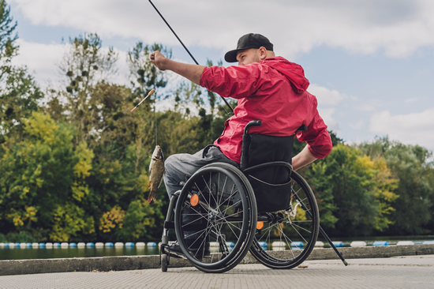

Group & Centre-Based Activities
Structured activities at our Smithfield centre that encourage connection, learning, confidence and personal development.
Explore this support : Group & Centre-Based ActivitiesNDIS disability support · Western Sydney
At PACES, we believe good support begins with understanding the individual. Our team combines experience, personalised mentoring and genuine relationships to help participants build confidence, independence and work towards their goals.
Feeling seen, heard and supported.

Our mission
We take time to understand each participant’s personality, interests and needs, helping us connect them with mentor-driven supports that build trust, form meaningful relationships and encourage personal growth.
Discover our storySupport with purpose
Structured activities at our Smithfield centre that encourage connection, learning, confidence and personal development.
Explore this support : Group & Centre-Based Activities
Individualised, mentor-driven support for personal goals, physical well-being, confidence and new skills.
Explore this support : Personalised Mentorship
Personalised, practical support with everyday living tasks, personal care routines and assistance around the home.
Explore this support : Daily Living & Domestic AssistanceSupport to explore your community, build social connections and enjoy meaningful new experiences.
Explore this support : Community ParticipationWhy choose PACES?
We take time to understand people and build a team around their goals.
Get to know PACESWe focus on personalised, consistent support rather than growing at the expense of quality. Every participant deserves our time, attention and commitment.
We work alongside families, Support Coordinators and allied health professionals to keep everyone working towards shared goals.
Our team values education, professional development and continuous improvement, adapting our approach to each participant’s changing needs.
Your next step
Let’s have a conversation to get to know each other and see how we can meet your support needs.
Together, we develop a personalised support plan and bring together the right team around your needs and goals.
We put your plan into action, building meaningful relationships and working towards your goals while continually reviewing progress.
Meet our team
Hover over or tap a profile to read their introduction.
With over 20 years of experience in disability support, Farah is passionate about understanding individual needs, building meaningful relationships and ensuring participants receive personalised, quality care.
Enquire about supportView full profile →With a background in engineering and a growing interest in behavioural studies, Issa focuses on improving service quality, developing the team and creating opportunities for participants to grow and thrive.
Enquire about supportView full profile →Combining her nursing knowledge with a passion for quality care, Suzie guides and supports our team to deliver safe, consistent and person-centred supports.
Enquire about supportView full profile →Bilal takes pride in supporting people to feel confident and involved in their everyday lives. As an Enrolled Nurse at PACES, he values respectful communication, a friendly approach and taking the time to understand each person’s preferences.
Enquire about supportView full profile →Words From Our Community
Thoughtful words from the people and families we support.
Explore Our Google Reviews (opens in a new tab)I’ve had an excellent experience with Prosper and Care Endeavour Services. They truly focus on person-centred care, taking the time to understand my needs, goals, and lifestyle. The team is reliable, professional, and friendly, and I’ve always felt listened to, respected, and supported. I would highly recommend them to anyone looking for compassionate, personalised care.
Extremely grateful for the care given to my daughter. Honest and reliable. I recommend their services 100%. They are always willing to help out
Since my son joined this center hes got the best support and help other agencies couldn't provide.Their professionalism helped my son achieve many of his goals. Thank you for your support
This NDIS service provider presents as a professional and well structured organisation within the disability support sector. They appear to prioritise person centred care, with a focus on delivering services that align with individual goals and NDIS standards.
Honest and genuine, the service you’d want for your family members that are in need of assistance.
My son Shaun has been with PACES close to a year now. I would like to acknowledge the carers for the incredible job they do with Shaun Their compassion, care, and patience are remarkable. I have seen many good changes in Shaun and I am grateful. The kindness and dedication of all of them is second to none. Highly recommended.
Selected Google reviews. Capitalisation has been tidied for readability; the reviewers’ wording is retained.
A little clarity
Find out more about your options, our services and how we work at PACES.
All frequently asked questionsThe right provider should understand your needs, respect your preferences and offer consistent, reliable support. At PACES, we take time to get to know each participant and their goals, matching them with suitable support workers and working closely with families and Support Coordinators to provide personalised support.
Yes. Your comfort, preferences and compatibility matter. At PACES, we aim to match participants with a suitable support worker who understands their personality, interests and support needs, helping build trust and positive relationships.
Depending on your NDIS plan, Core Supports funding may cover assistance with daily living, community participation and social activities. We can discuss which of our services align with your goals and available funding. Suitability and funding arrangements must be confirmed for your individual circumstances.
NDIS participants can choose and change support providers, subject to any existing service agreement and notice periods. We understand the importance of finding the right support and can discuss how to help make a transition as smooth and comfortable as possible.
Tell us what you’re looking for. We’d love to hear from you and discuss how we may be able to help.